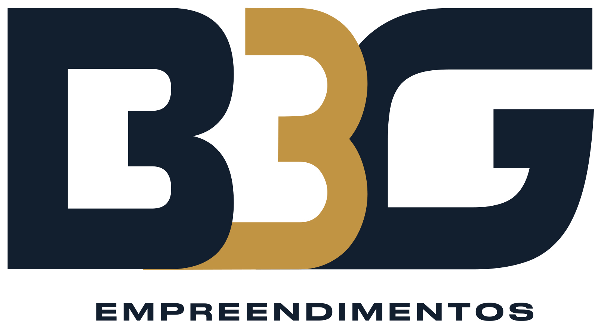

E a ponte saiu do papel para o estudo
O estudo de viabilidade da ponte entre Joinville e São Francisco do Sul está na fase de definição de traçado, com cerca de 1,2 km de extensão previstos. A entrega do estudo foi programada para setembro de 2026.
Quatro prefeituras dividem o custo do estudo, entre elas Itapoá.